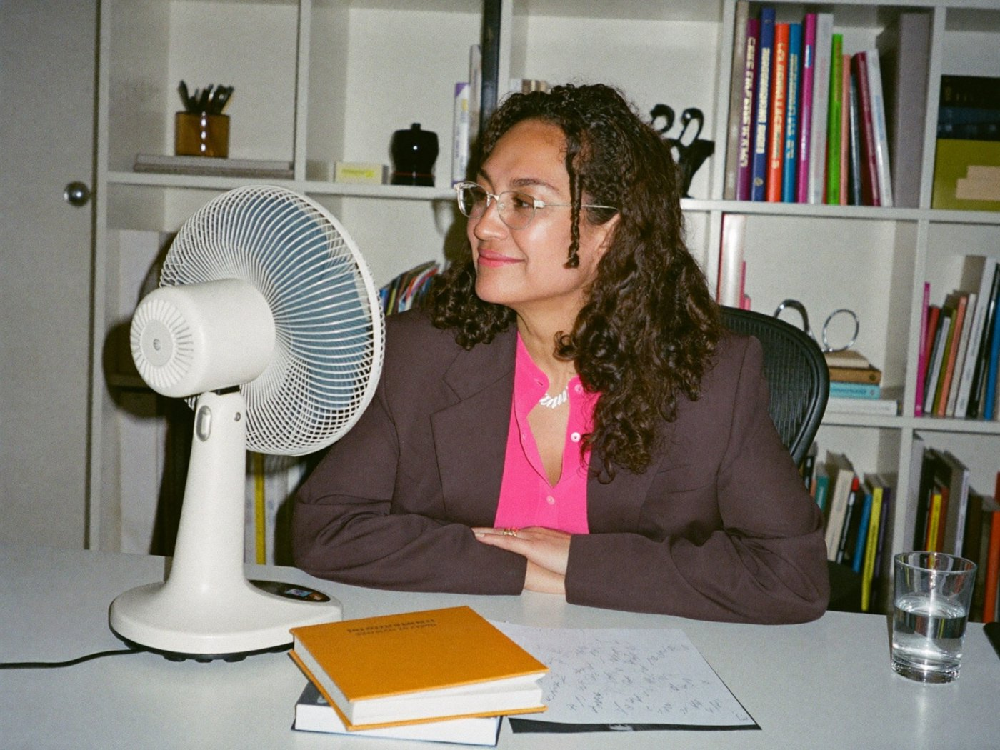

PAUSA · El manual de la menopausiaPara RR. HH. y líderes
6
Arranca esta página y déjala en RR. HH.
Seis acciones para una empresa que no pierde talento
Lo que una empresa hace, o deja de hacer, decide si una mujer pide ayuda o se va en silencio. Las seis acciones vienen de las recomendaciones del CIPD, el instituto británico de gestión de personas.
67%
notó un efecto mayormente negativo en su trabajo.
27%
siente un impacto negativo en su progreso profesional.
CIPD, Menopause in the workplace, 4 oct. 2023; más de 2.000 mujeres de 40 a 60 años, empleadas y con síntomas (Reino Unido).
Autodiagnóstico para la empresa
Fig. 92 · Marca una casilla por filaAcciónLo tenemosEn marchaFalta
01Cultura abierta
Se habla de la menopausia sin burla ni tabú.
02Política o guía escrita
Qué apoyo existe, a quién acudir, cómo pedir ajustes.
03Flexibilidad real
Horario o lugar de trabajo adaptados a cada puesto.
04Ausencias justas
La política de ausencias no penaliza síntomas persistentes.
05Mandos formados
Conocen los síntomas y saben tener una conversación sensible.
06Ajustes de confort
Espacios frescos, agua fría, baños accesibles, uniformes adecuados.
Acciones adaptadas de las recomendaciones a empleadores de CIPD (2023).
Cuidar a quien atraviesa la menopausia es una responsabilidad compartida entre la persona, su equipo y la organización.

ajustes que cuidan
09 · Responsabilidad compartida50